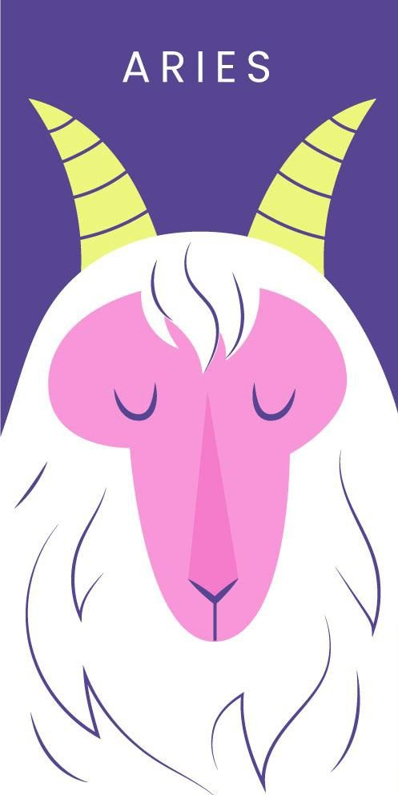
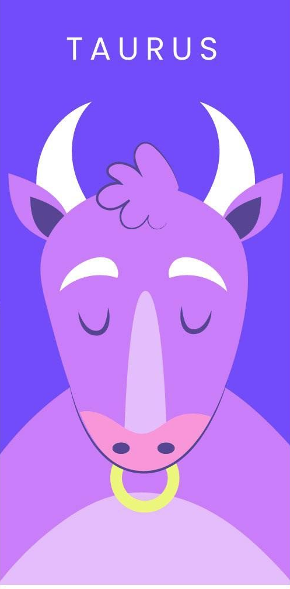

Aries
"roiling, moaning, this realm of ours
In madness lost shall die"

Tauro
"corporeal laws are unwrit
as sun and love retreat"
 Géminis
Géminis
"to cosmic forms from tangent planes
we end as we began"
 Cáncer
Cáncer
"the moon is full, the night is dark
the stars are bright and stark"
 Leo
Leo
"in luminous space, darkened stars...
they gaze, accuse and deny"
Virgo
"the virgin's womb, the mother's breast
the cradle and the grave"
 Libra
Libra
"the scales of justice, balance, truth
the sword of light and flame"
 Escorpio
Escorpio
"the scorpion's sting, the eagle's wings
the serpent's tail and fangs"
 Sagitario
Sagitario
"the centaur's bow, the archer's aim
the hunter's cry and game"
 Capricornio
Capricornio
"the goat's horns, the fish's tail
the mountain and the sea"
 Acuario
Acuario
"the water bearer, the water's flow
the river and the sea"
 Piscis
Piscis
"the fish's tail, the fish's eye
the fisher and the sea"
Los signos y los programadores
En esta versión divertida de los signos del zodiaco para
programadores, nos preparamos para un viaje lleno de risas y
diversión. Comenzamos con Aries, el codificador loco, que siempre está
buscando nuevos desafíos y retos. Aunque puede ser un poco impulsivo,
nunca se rinde hasta que encuentra la solución perfecta. Luego,
tenemos a Tauro, el debugador obstinado, que nunca se da por vencido
aun cuando todos los demás han abandonado el proyecto. Y finalmente,
tenemos a Géminis, el programador bromista, siempre está listo con un
chiste o una broma para hacer reír a sus compañeros y mantener un
ambiente de trabajo positivo. En resumen, estos signos del zodiaco
para programadores son una combinación perfecta de habilidades
técnicas y sentido del humor.

Mi signo
Capricornio
"roiling, moaning, this realm of ours
In madness lost shall die"
A este signo de tierra, junto a Tauro y Virgo, se le conoce por su cabezonería. Está regido por Saturno, el planeta de la estructura y la responsabilidad, y engloba a los nacidos entre el 22 de diciembre al 19 de enero. Con la piedra de ojo de tigre como la perteneciente a esa constelación, la cabra es el símbolo que le representa, su dualidad es femenina, su cualidad es cardinal y el color relacionado con esta constelación es el marrón, según destaca Juliana McCarthy en su libro ‘Somos estrellas. Una guía moderna de la astrología’.